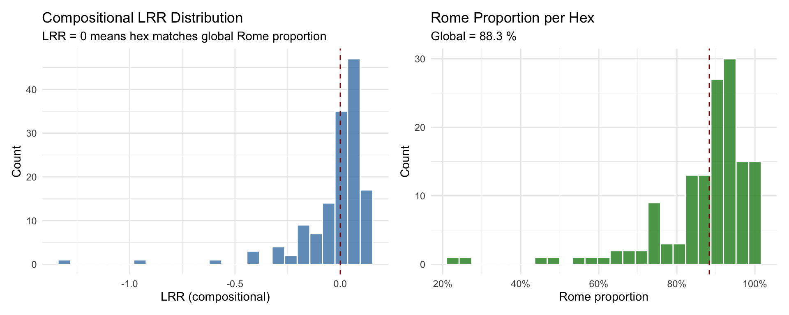
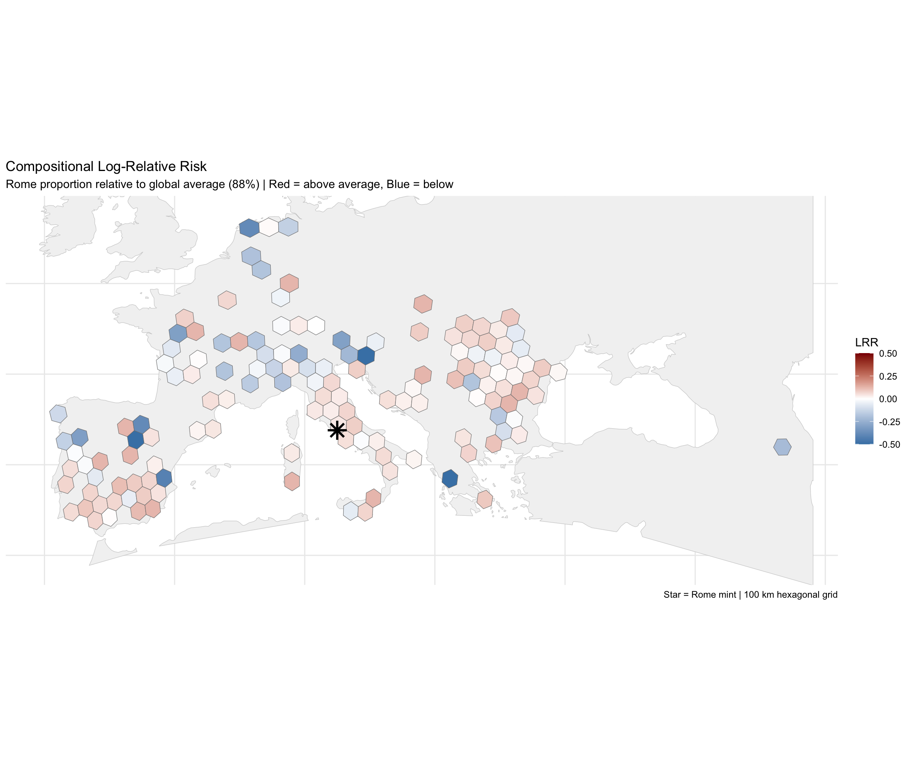
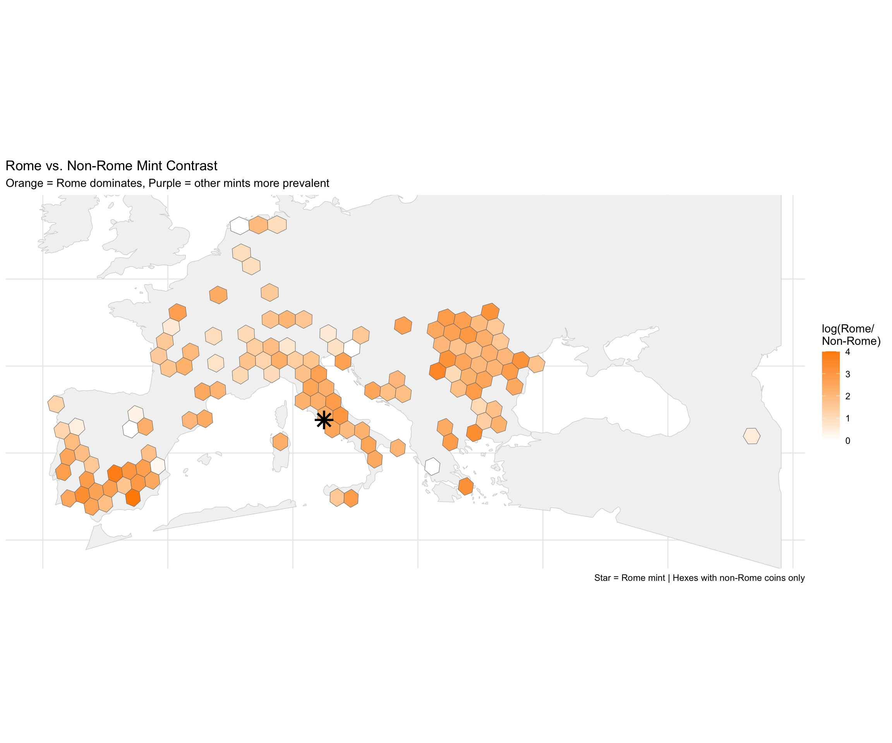
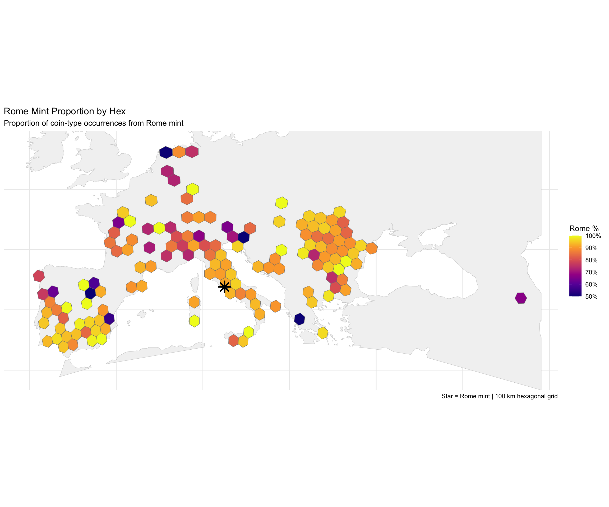
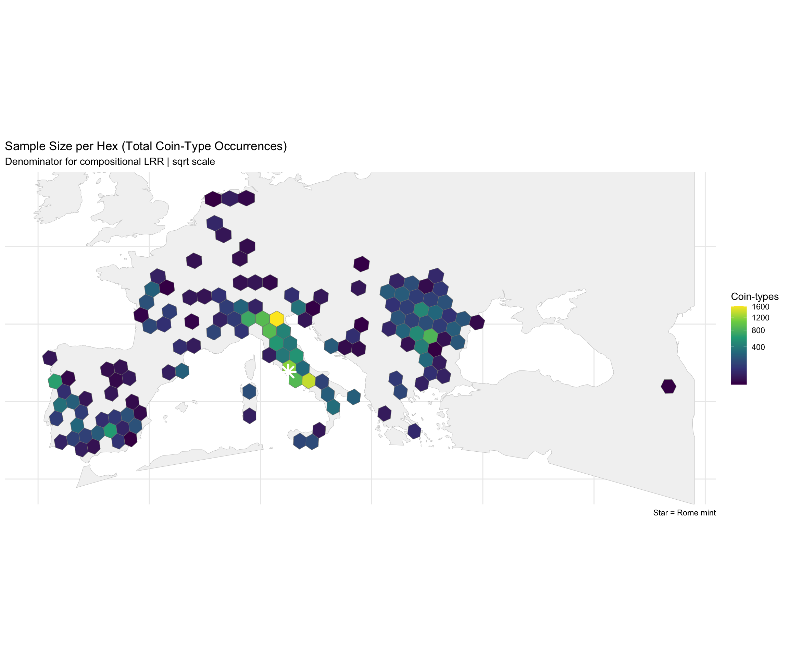
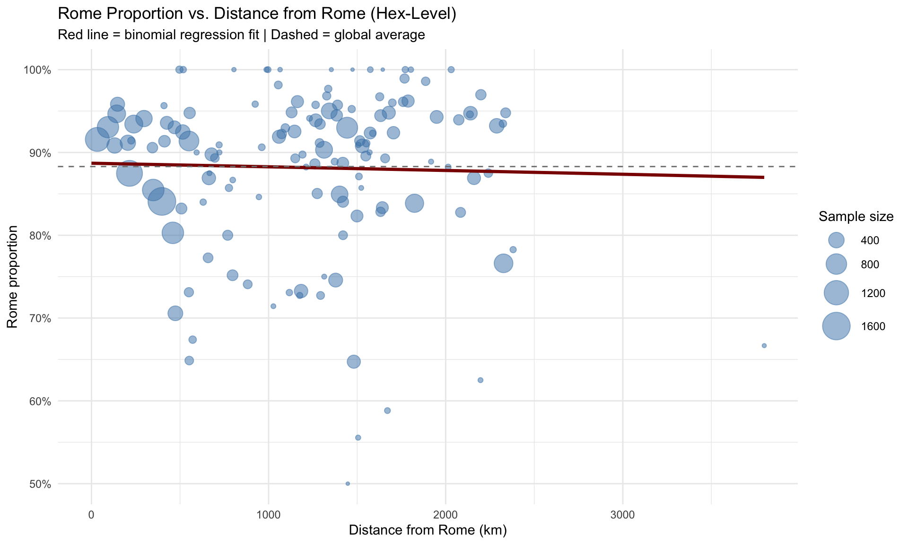

Code
library(tidyverse)
library(sf)
library(knitr)
theme_set(theme_minimal())Rome Mint Penetration Across the Roman World
John Glendenning
December 18, 2025
The initial diagnostic analysis revealed:
| Metric | Value |
|---|---|
| Hoards containing Rome coins | 99.4% |
| Hoards without ANY Rome coins | 3 |
With only 3 hoards lacking Rome coins, the binary contrast (Rome-containing vs. all hoards) collapsed—numerator ≈ denominator everywhere, producing LRR ≈ 0.
However, the diagnostics also revealed exploitable variation:
The compositional approach asks: Where is the proportion of Rome-minted coins higher or lower than the global average?
\[\text{LRR}_{\text{comp}}(s) = \log \left( \frac{p_{\text{Rome}}(s)}{p_{\text{Rome}}^{\text{global}}} \right)\]
where \(p_{\text{Rome}}(s)\) is the proportion of Rome coins in spatial unit \(s\).
# ============================================================
# UPDATE THIS PATH to your local CHRR data file
# ============================================================
chrr_file <- "/Users/john/Library/Mobile Documents/com~apple~CloudDocs/Home/John/GIS/Roman Italy GIS/Coin Project/data/chrr_data.csv"
# Try to load data
data_loaded <- FALSE
if (file.exists(chrr_file)) {
chrr_raw <- read_csv(chrr_file, show_col_types = FALSE)
data_loaded <- TRUE
cat("✓ Loaded", nrow(chrr_raw), "rows from", basename(chrr_file), "\n")
} else {
alt_paths <- c(
"/mnt/user-data/uploads/chrr_data.csv",
"~/chrr_data.csv",
"./data/chrr_data.csv"
)
for (alt in alt_paths) {
if (file.exists(alt)) {
chrr_raw <- read_csv(alt, show_col_types = FALSE)
data_loaded <- TRUE
cat("✓ Loaded", nrow(chrr_raw), "rows from", alt, "\n")
break
}
}
}✓ Loaded 31951 rows from chrr_data.csv chrr_flagged <- chrr_raw %>%
mutate(
is_rome = mint_id == "rome" | str_detect(mint_uri, "/id/rome$"),
is_rome = replace_na(is_rome, FALSE)
)
# Global composition
global_comp <- chrr_flagged %>%
summarise(
total_rows = n(),
rome_rows = sum(is_rome),
non_rome_rows = sum(!is_rome),
p_rome_global = rome_rows / total_rows
)
kable(global_comp,
digits = c(0, 0, 0, 4),
caption = "Global composition (row-level)")| total_rows | rome_rows | non_rome_rows | p_rome_global |
|---|---|---|---|
| 31951 | 28177 | 3774 | 0.8819 |
Global Rome proportion: 88.19 %hoard_comp <- chrr_flagged %>%
group_by(hoard_id, hoard_lat, hoard_long) %>%
summarise(
n_types = n(),
n_rome = sum(is_rome),
n_non_rome = sum(!is_rome),
p_rome = n_rome / n_types,
.groups = "drop"
) %>%
filter(!is.na(hoard_lat), !is.na(hoard_long))
cat("Hoards with valid coordinates:", nrow(hoard_comp), "\n")Hoards with valid coordinates: 466 # Summary of hoard-level Rome proportions
hoard_summary <- hoard_comp %>%
summarise(
n_hoards = n(),
mean_p_rome = mean(p_rome),
sd_p_rome = sd(p_rome),
min_p_rome = min(p_rome),
q25_p_rome = quantile(p_rome, 0.25),
median_p_rome = median(p_rome),
q75_p_rome = quantile(p_rome, 0.75),
max_p_rome = max(p_rome)
)
kable(hoard_summary,
digits = 3,
caption = "Rome proportion within hoards: summary statistics")| n_hoards | mean_p_rome | sd_p_rome | min_p_rome | q25_p_rome | median_p_rome | q75_p_rome | max_p_rome |
|---|---|---|---|---|---|---|---|
| 466 | 0.881 | 0.154 | 0 | 0.857 | 0.932 | 0.97 | 1 |
library(rnaturalearth)
library(rnaturalearthdata)
# Get land polygons
land <- ne_countries(scale = "medium", returnclass = "sf") %>%
st_union()
# Filter valid geometries
hoard_sf_valid <- hoard_sf %>%
filter(!st_is_empty(geometry))
# Bounding box
hoard_bbox <- st_bbox(hoard_sf_valid)
if (any(is.na(hoard_bbox))) {
hoard_bbox <- c(xmin = -10, ymin = 30, xmax = 45, ymax = 55)
names(hoard_bbox) <- c("xmin", "ymin", "xmax", "ymax")
}
pad <- 2
# Create study extent
study_extent <- st_polygon(list(rbind(
c(hoard_bbox["xmin"] - pad, hoard_bbox["ymin"] - pad),
c(hoard_bbox["xmax"] + pad, hoard_bbox["ymin"] - pad),
c(hoard_bbox["xmax"] + pad, hoard_bbox["ymax"] + pad),
c(hoard_bbox["xmin"] - pad, hoard_bbox["ymax"] + pad),
c(hoard_bbox["xmin"] - pad, hoard_bbox["ymin"] - pad)
))) %>%
st_sfc(crs = 4326)
study_land <- st_intersection(land, study_extent)
cat("Study window: [",
round(hoard_bbox["xmin"] - pad, 1), ",",
round(hoard_bbox["xmax"] + pad, 1), "] x [",
round(hoard_bbox["ymin"] - pad, 1), ",",
round(hoard_bbox["ymax"] + pad, 1), "]\n")Study window: [ -11.1 , 49.1 ] x [ 33.3 , 54.9 ]target_crs <- 3035 # ETRS89-extended / LAEA Europe
hoard_sf_proj <- st_transform(hoard_sf, target_crs)
study_land_proj <- st_transform(study_land, target_crs)
rome_mint <- st_as_sf(
tibble(name = "Rome", lon = 12.4964, lat = 41.9028),
coords = c("lon", "lat"),
crs = 4326
) %>%
st_transform(target_crs)
cat("Projected to EPSG:", target_crs, "\n")Projected to EPSG: 3035 hex_size <- 100000 # 100 km in meters
hex_grid <- st_make_grid(
study_land_proj,
cellsize = hex_size,
square = FALSE
) %>%
st_sf(hex_id = seq_along(.), geometry = .) %>%
st_set_crs(target_crs)
# Filter to land hexes
hex_land <- hex_grid %>%
filter(lengths(st_intersects(., study_land_proj)) > 0)
# Centroid on land filter
hex_centroids <- st_centroid(hex_land)
on_land <- lengths(st_intersects(hex_centroids, study_land_proj)) > 0
hex_land <- hex_land[on_land, ]
cat("Hex grid: ", nrow(hex_land), "hexes on land (", hex_size/1000, "km)\n")Hex grid: 859 hexes on land ( 100 km)# Spatial join
hoard_hex <- st_join(hoard_sf_proj, hex_land, join = st_within) %>%
filter(!is.na(hex_id))
# Aggregate composition per hex
hex_comp <- hoard_hex %>%
st_drop_geometry() %>%
group_by(hex_id) %>%
summarise(
n_hoards = n(),
total_types = sum(n_types), # Total coin-type occurrences
rome_types = sum(n_rome), # Rome coin-type occurrences
non_rome_types = sum(n_non_rome),
# Weighted mean Rome proportion (by hoard size)
p_rome_weighted = rome_types / total_types,
# Unweighted mean (each hoard counts equally)
p_rome_unweighted = mean(p_rome),
.groups = "drop"
)
# Join back to hex geometry
hex_lrr <- hex_land %>%
left_join(hex_comp, by = "hex_id") %>%
mutate(
across(c(n_hoards, total_types, rome_types, non_rome_types),
~replace_na(.x, 0)),
has_data = n_hoards > 0
)
cat("Hoards assigned to hexes:", sum(hex_lrr$n_hoards), "\n")Hoards assigned to hexes: 404 Hexes with data: 141 Three formulations, each with different assumptions:
Global Rome proportion (from hex data): 88.29 %# Smoothing constant for sparse hexes
epsilon <- 0.5
hex_lrr <- hex_lrr %>%
mutate(
# ============================================================
# Method 1: Compositional LRR (row-level aggregation)
# Compares hex Rome proportion to global Rome proportion
# ============================================================
LRR_comp = ifelse(
has_data,
log((rome_types + epsilon) / (total_types + epsilon)) - log(p_global),
NA_real_
),
# ============================================================
# Method 2: Rome vs Non-Rome LRR (direct contrast)
# Positive = Rome dominates, Negative = other mints dominate
# ============================================================
LRR_contrast = ifelse(
has_data & non_rome_types > 0,
log((rome_types + epsilon) / (non_rome_types + epsilon)),
NA_real_
),
# ============================================================
# Method 3: Deviation from expected (binomial framework)
# How many more/fewer Rome coins than expected at global rate?
# ============================================================
expected_rome = total_types * p_global,
rome_excess = rome_types - expected_rome,
rome_excess_pct = ifelse(has_data, 100 * rome_excess / expected_rome, NA_real_)
)lrr_stats <- hex_lrr %>%
filter(has_data) %>%
st_drop_geometry() %>%
summarise(
n_hexes = n(),
# Compositional LRR
lrr_comp_mean = mean(LRR_comp, na.rm = TRUE),
lrr_comp_sd = sd(LRR_comp, na.rm = TRUE),
lrr_comp_min = min(LRR_comp, na.rm = TRUE),
lrr_comp_max = max(LRR_comp, na.rm = TRUE),
# Rome vs Non-Rome
lrr_contrast_mean = mean(LRR_contrast, na.rm = TRUE),
lrr_contrast_sd = sd(LRR_contrast, na.rm = TRUE),
# Rome proportion
p_rome_mean = mean(p_rome_weighted, na.rm = TRUE),
p_rome_sd = sd(p_rome_weighted, na.rm = TRUE)
)
kable(lrr_stats, digits = 3, caption = "LRR Summary Statistics")| n_hexes | lrr_comp_mean | lrr_comp_sd | lrr_comp_min | lrr_comp_max | lrr_contrast_mean | lrr_contrast_sd | p_rome_mean | p_rome_sd |
|---|---|---|---|---|---|---|---|---|
| 141 | -0.023 | 0.185 | -1.311 | 0.125 | 1.998 | 0.896 | 0.871 | 0.13 |
hex_data <- hex_lrr %>%
filter(has_data) %>%
st_drop_geometry()
p1 <- ggplot(hex_data, aes(x = LRR_comp)) +
geom_histogram(bins = 25, fill = "steelblue", color = "white", alpha = 0.8) +
geom_vline(xintercept = 0, color = "darkred", linetype = "dashed") +
labs(
title = "Compositional LRR Distribution",
subtitle = "LRR = 0 means hex matches global Rome proportion",
x = "LRR (compositional)",
y = "Count"
)
p2 <- ggplot(hex_data, aes(x = p_rome_weighted)) +
geom_histogram(bins = 25, fill = "forestgreen", color = "white", alpha = 0.8) +
geom_vline(xintercept = p_global, color = "darkred", linetype = "dashed") +
scale_x_continuous(labels = scales::percent_format()) +
labs(
title = "Rome Proportion per Hex",
subtitle = paste("Global =", round(p_global * 100, 1), "%"),
x = "Rome proportion",
y = "Count"
)
library(patchwork)
p1 + p2
hex_map <- hex_lrr %>%
filter(has_data) %>%
st_transform(4326)
land_wgs <- st_transform(study_land_proj, 4326)
rome_wgs <- st_transform(rome_mint, 4326)
ggplot() +
geom_sf(data = land_wgs, fill = "grey95", color = "grey80") +
geom_sf(
data = hex_map,
aes(fill = LRR_comp),
color = "grey50",
linewidth = 0.2
) +
geom_sf(data = rome_wgs, color = "black", shape = 8, size = 5, stroke = 1.5) +
scale_fill_gradient2(
low = "steelblue",
mid = "white",
high = "darkred",
midpoint = 0,
name = "LRR",
limits = c(-0.5, 0.5),
oob = scales::squish
) +
coord_sf(
xlim = c(hoard_bbox["xmin"] - 1, hoard_bbox["xmax"] + 1),
ylim = c(hoard_bbox["ymin"] - 1, hoard_bbox["ymax"] + 1)
) +
labs(
title = "Compositional Log-Relative Risk",
subtitle = "Rome proportion relative to global average (88%) | Red = above average, Blue = below",
caption = "Star = Rome mint | 100 km hexagonal grid"
) +
theme_minimal() +
theme(
axis.text = element_blank(),
axis.title = element_blank(),
legend.position = "right"
)
ggplot() +
geom_sf(data = land_wgs, fill = "grey95", color = "grey80") +
geom_sf(
data = hex_map %>% filter(!is.na(LRR_contrast)),
aes(fill = LRR_contrast),
color = "grey50",
linewidth = 0.2
) +
geom_sf(data = rome_wgs, color = "black", shape = 8, size = 5, stroke = 1.5) +
scale_fill_gradient2(
low = "purple4",
mid = "white",
high = "darkorange",
midpoint = log(1), # Equal Rome and non-Rome
name = "log(Rome/\nNon-Rome)",
limits = c(0, 4),
oob = scales::squish
) +
coord_sf(
xlim = c(hoard_bbox["xmin"] - 1, hoard_bbox["xmax"] + 1),
ylim = c(hoard_bbox["ymin"] - 1, hoard_bbox["ymax"] + 1)
) +
labs(
title = "Rome vs. Non-Rome Mint Contrast",
subtitle = "Orange = Rome dominates, Purple = other mints more prevalent",
caption = "Star = Rome mint | Hexes with non-Rome coins only"
) +
theme_minimal() +
theme(
axis.text = element_blank(),
axis.title = element_blank(),
legend.position = "right"
)
ggplot() +
geom_sf(data = land_wgs, fill = "grey95", color = "grey80") +
geom_sf(
data = hex_map,
aes(fill = p_rome_weighted),
color = "grey50",
linewidth = 0.2
) +
geom_sf(data = rome_wgs, color = "black", shape = 8, size = 5, stroke = 1.5) +
scale_fill_viridis_c(
name = "Rome %",
labels = scales::percent_format(),
option = "plasma",
limits = c(0.5, 1),
oob = scales::squish
) +
coord_sf(
xlim = c(hoard_bbox["xmin"] - 1, hoard_bbox["xmax"] + 1),
ylim = c(hoard_bbox["ymin"] - 1, hoard_bbox["ymax"] + 1)
) +
labs(
title = "Rome Mint Proportion by Hex",
subtitle = "Proportion of coin-type occurrences from Rome mint",
caption = "Star = Rome mint | 100 km hexagonal grid"
) +
theme_minimal() +
theme(
axis.text = element_blank(),
axis.title = element_blank(),
legend.position = "right"
)
ggplot() +
geom_sf(data = land_wgs, fill = "grey95", color = "grey80") +
geom_sf(
data = hex_map,
aes(fill = total_types),
color = "grey50",
linewidth = 0.2
) +
geom_sf(data = rome_wgs, color = "white", shape = 8, size = 5, stroke = 1.5) +
scale_fill_viridis_c(
name = "Coin-types",
trans = "sqrt",
option = "viridis"
) +
coord_sf(
xlim = c(hoard_bbox["xmin"] - 1, hoard_bbox["xmax"] + 1),
ylim = c(hoard_bbox["ymin"] - 1, hoard_bbox["ymax"] + 1)
) +
labs(
title = "Sample Size per Hex (Total Coin-Type Occurrences)",
subtitle = "Denominator for compositional LRR | sqrt scale",
caption = "Star = Rome mint"
) +
theme_minimal() +
theme(
axis.text = element_blank(),
axis.title = element_blank(),
legend.position = "right"
)
The compositional LRR can be formalized as a binomial regression:
\[N_{\text{Rome},h} \sim \text{Binomial}(N_{\text{total},h}, \pi_h)\] \[\text{logit}(\pi_h) = \beta_0 + \text{spatial effects}\]
# Prepare data for modeling
model_data <- hex_lrr %>%
filter(has_data, total_types > 0) %>%
st_drop_geometry()
# Simple binomial model (intercept only)
binom_fit <- glm(
cbind(rome_types, non_rome_types) ~ 1,
family = binomial(link = "logit"),
data = model_data
)
# Extract estimates
beta0 <- coef(binom_fit)[1]
se_beta0 <- sqrt(vcov(binom_fit)[1,1])
p_fitted <- plogis(beta0)
cat("Binomial Model Results\n")Binomial Model Results======================Intercept (logit scale): 2.0205 Standard error: 0.0194 Fitted global probability: 0.8829 ( 88.3 %)95% CI: 0.879 - 0.8868 # Calculate hex centroid distance from Rome
hex_centroids_wgs <- hex_lrr %>%
filter(has_data) %>%
st_centroid() %>%
st_transform(4326)
rome_coords <- c(12.4964, 41.9028)
# Add distance
hex_lrr_dist <- hex_lrr %>%
filter(has_data) %>%
mutate(
centroid = st_centroid(geometry)
)
# Get centroids in WGS84 for distance calculation
centroids_wgs <- st_transform(st_centroid(hex_lrr_dist), 4326)
coords <- st_coordinates(centroids_wgs)
hex_lrr_dist <- hex_lrr_dist %>%
st_drop_geometry() %>%
mutate(
cent_lon = coords[, 1],
cent_lat = coords[, 2],
dist_rome_km = sqrt((cent_lon - rome_coords[1])^2 + (cent_lat - rome_coords[2])^2) * 111
)
# Binomial with distance covariate
binom_dist <- glm(
cbind(rome_types, non_rome_types) ~ dist_rome_km,
family = binomial(link = "logit"),
data = hex_lrr_dist
)
summary(binom_dist)
Call:
glm(formula = cbind(rome_types, non_rome_types) ~ dist_rome_km,
family = binomial(link = "logit"), data = hex_lrr_dist)
Coefficients:
Estimate Std. Error z value Pr(>|z|)
(Intercept) 2.060e+00 3.275e-02 62.896 <2e-16 ***
dist_rome_km -4.213e-05 2.796e-05 -1.507 0.132
---
Signif. codes: 0 '***' 0.001 '**' 0.01 '*' 0.05 '.' 0.1 ' ' 1
(Dispersion parameter for binomial family taken to be 1)
Null deviance: 1205.8 on 140 degrees of freedom
Residual deviance: 1203.5 on 139 degrees of freedom
AIC: 1711.8
Number of Fisher Scoring iterations: 4# Predicted probability vs distance
dist_seq <- seq(0, max(hex_lrr_dist$dist_rome_km, na.rm = TRUE), length.out = 100)
pred_df <- data.frame(dist_rome_km = dist_seq)
pred_df$p_rome_pred <- predict(binom_dist, newdata = pred_df, type = "response")
ggplot() +
geom_point(
data = hex_lrr_dist,
aes(x = dist_rome_km, y = p_rome_weighted, size = total_types),
alpha = 0.5,
color = "steelblue"
) +
geom_line(
data = pred_df,
aes(x = dist_rome_km, y = p_rome_pred),
color = "darkred",
linewidth = 1.2
) +
geom_hline(yintercept = p_global, linetype = "dashed", color = "grey50") +
scale_y_continuous(labels = scales::percent_format(), limits = c(0.5, 1)) +
scale_size_continuous(name = "Sample size", range = c(1, 10)) +
labs(
title = "Rome Proportion vs. Distance from Rome (Hex-Level)",
subtitle = "Red line = binomial regression fit | Dashed = global average",
x = "Distance from Rome (km)",
y = "Rome proportion"
)
Distance Effect Interpretation==============================Intercept: 2.06 Distance coefficient: -4.2e-05 per km
At Rome (0 km): p = 0.887 At 1000 km: p = 0.883 At 2000 km: p = 0.878 At 3000 km: p = 0.874
Odds ratio per 100 km increase: 0.9958 (Values < 1 indicate Rome proportion decreases with distance)hex_table <- hex_lrr %>%
filter(has_data) %>%
st_drop_geometry() %>%
select(hex_id, n_hoards, total_types, rome_types, non_rome_types,
p_rome_weighted, LRR_comp, LRR_contrast) %>%
arrange(desc(total_types))
kable(
head(hex_table, 25),
digits = c(0, 0, 0, 0, 0, 3, 3, 3),
col.names = c("Hex", "Hoards", "Total", "Rome", "Non-Rome", "Rome %", "LRR (comp)", "LRR (contrast)"),
caption = "Top 25 hexes by sample size"
)| Hex | Hoards | Total | Rome | Non-Rome | Rome % | LRR (comp) | LRR (contrast) |
|---|---|---|---|---|---|---|---|
| 617 | 16 | 1621 | 1363 | 258 | 0.841 | -0.049 | 1.663 |
| 697 | 17 | 1381 | 1208 | 173 | 0.875 | -0.009 | 1.941 |
| 648 | 12 | 1151 | 1054 | 97 | 0.916 | 0.037 | 2.381 |
| 600 | 8 | 901 | 770 | 131 | 0.855 | -0.033 | 1.768 |
| 584 | 9 | 898 | 721 | 177 | 0.803 | -0.095 | 1.402 |
| 664 | 7 | 878 | 817 | 61 | 0.931 | 0.053 | 2.587 |
| 980 | 18 | 841 | 782 | 59 | 0.930 | 0.052 | 2.577 |
| 551 | 6 | 731 | 668 | 63 | 0.914 | 0.034 | 2.354 |
| 71 | 4 | 637 | 488 | 149 | 0.766 | -0.142 | 1.184 |
| 184 | 10 | 601 | 504 | 97 | 0.839 | -0.051 | 1.644 |
| 616 | 4 | 578 | 540 | 38 | 0.934 | 0.057 | 2.642 |
| 665 | 6 | 562 | 532 | 30 | 0.947 | 0.070 | 2.860 |
| 947 | 11 | 496 | 448 | 48 | 0.903 | 0.023 | 2.224 |
| 948 | 4 | 478 | 406 | 72 | 0.849 | -0.039 | 1.724 |
| 633 | 5 | 457 | 430 | 27 | 0.941 | 0.064 | 2.751 |
| 963 | 4 | 421 | 400 | 21 | 0.950 | 0.073 | 2.925 |
| 632 | 5 | 393 | 357 | 36 | 0.908 | 0.029 | 2.282 |
| 649 | 6 | 385 | 351 | 34 | 0.912 | 0.032 | 2.321 |
| 667 | 4 | 350 | 247 | 103 | 0.706 | -0.223 | 0.872 |
| 70 | 5 | 339 | 316 | 23 | 0.932 | 0.054 | 2.600 |
| 762 | 3 | 332 | 307 | 25 | 0.925 | 0.046 | 2.490 |
| 681 | 6 | 311 | 298 | 13 | 0.958 | 0.082 | 3.096 |
| 979 | 3 | 299 | 223 | 76 | 0.746 | -0.168 | 1.072 |
| 981 | 7 | 293 | 266 | 27 | 0.908 | 0.028 | 2.271 |
| 102 | 3 | 285 | 270 | 15 | 0.947 | 0.071 | 2.859 |
# Prepare export data
hex_export <- hex_lrr %>%
filter(has_data) %>%
mutate(
centroid = st_centroid(geometry)
)
# Get centroid coordinates
cent_coords <- st_coordinates(st_transform(st_centroid(hex_export), 4326))
hex_export_df <- hex_export %>%
st_drop_geometry() %>%
mutate(
cent_lon = cent_coords[, 1],
cent_lat = cent_coords[, 2]
) %>%
select(
hex_id,
cent_lon, cent_lat,
n_hoards, total_types, rome_types, non_rome_types,
p_rome_weighted, p_rome_unweighted,
LRR_comp, LRR_contrast,
expected_rome, rome_excess, rome_excess_pct
)
# Save to CSV
write_csv(hex_export_df, "hex_lrr_100km.csv")
cat("Exported hex-level LRR data to hex_lrr_100km.csv\n")Exported hex-level LRR data to hex_lrr_100km.csvRows: 141 The hex framework is now ready for temporal stratification. Next steps:
By TPQ (deposition time): Stratify hoards by terminus post quem to see how Rome’s spatial reach changed over deposition periods
By mint date (production time): Stratify by when coins were minted to track production reach
HMM Integration: The hex-level composition becomes the observation for each spatial unit, with temporal sequences enabling regime detection
After validating patterns at 100 km:
R version 4.5.1 (2025-06-13)
Platform: aarch64-apple-darwin20
Running under: macOS Sequoia 15.7.1
Matrix products: default
BLAS: /Library/Frameworks/R.framework/Versions/4.5-arm64/Resources/lib/libRblas.0.dylib
LAPACK: /Library/Frameworks/R.framework/Versions/4.5-arm64/Resources/lib/libRlapack.dylib; LAPACK version 3.12.1
locale:
[1] en_US.UTF-8/en_US.UTF-8/en_US.UTF-8/C/en_US.UTF-8/en_US.UTF-8
time zone: America/Chicago
tzcode source: internal
attached base packages:
[1] stats graphics grDevices utils datasets methods base
other attached packages:
[1] patchwork_1.3.2 rnaturalearthdata_1.0.0 rnaturalearth_1.1.0
[4] knitr_1.50 sf_1.0-23 lubridate_1.9.4
[7] forcats_1.0.1 stringr_1.6.0 dplyr_1.1.4
[10] purrr_1.2.0 readr_2.1.6 tidyr_1.3.1
[13] tibble_3.3.0 ggplot2_4.0.1 tidyverse_2.0.0
loaded via a namespace (and not attached):
[1] s2_1.1.9 generics_0.1.4 class_7.3-23 KernSmooth_2.23-26
[5] stringi_1.8.7 hms_1.1.4 digest_0.6.39 magrittr_2.0.4
[9] evaluate_1.0.5 grid_4.5.1 timechange_0.3.0 RColorBrewer_1.1-3
[13] fastmap_1.2.0 jsonlite_2.0.0 e1071_1.7-16 DBI_1.2.3
[17] viridisLite_0.4.2 scales_1.4.0 cli_3.6.5 crayon_1.5.3
[21] rlang_1.1.6 units_1.0-0 bit64_4.6.0-1 withr_3.0.2
[25] yaml_2.3.12 parallel_4.5.1 tools_4.5.1 tzdb_0.5.0
[29] vctrs_0.6.5 R6_2.6.1 proxy_0.4-28 lifecycle_1.0.4
[33] classInt_0.4-11 bit_4.6.0 htmlwidgets_1.6.4 vroom_1.6.7
[37] pkgconfig_2.0.3 pillar_1.11.1 gtable_0.3.6 glue_1.8.0
[41] Rcpp_1.1.0 xfun_0.55 tidyselect_1.2.1 rstudioapi_0.17.1
[45] farver_2.1.2 htmltools_0.5.9 labeling_0.4.3 rmarkdown_2.30
[49] wk_0.9.4 compiler_4.5.1 S7_0.2.1